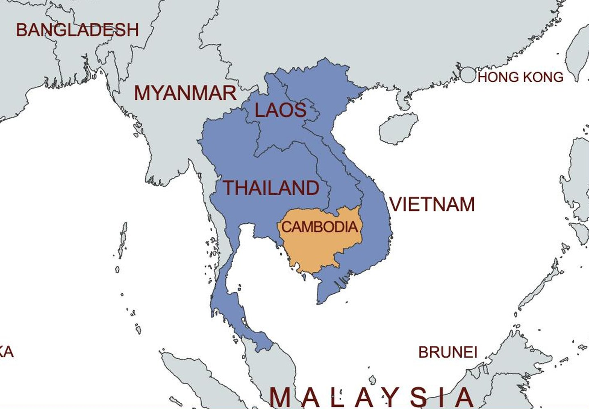
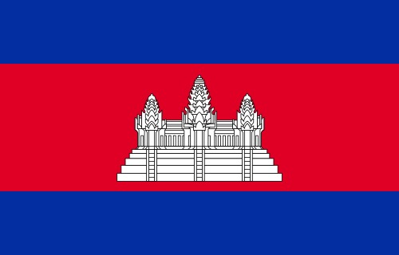
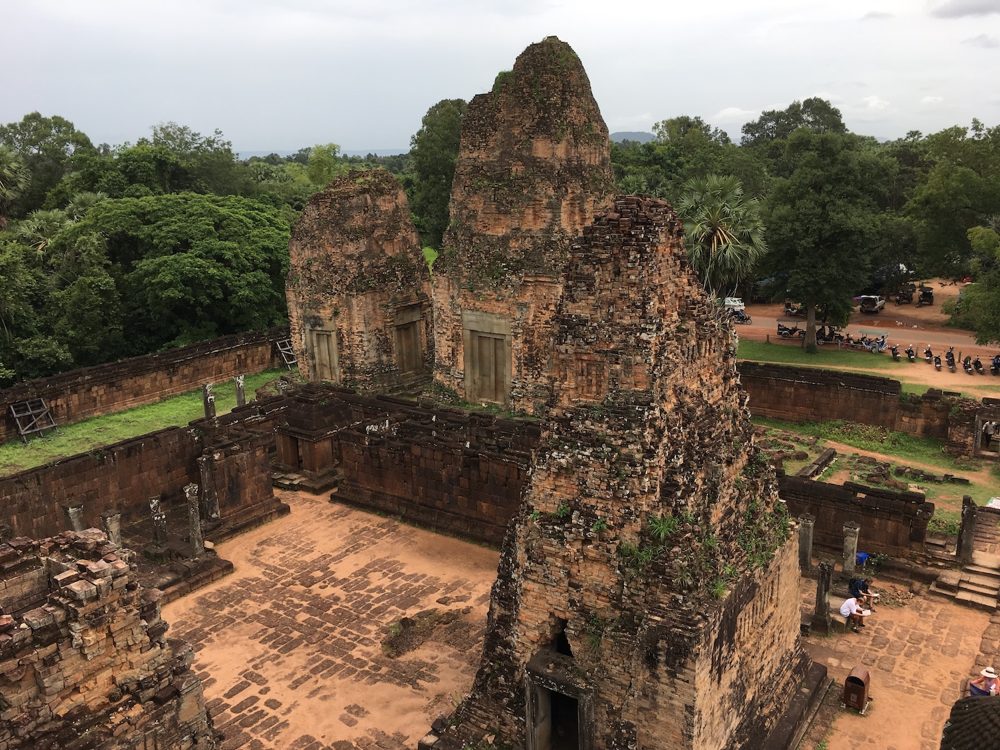
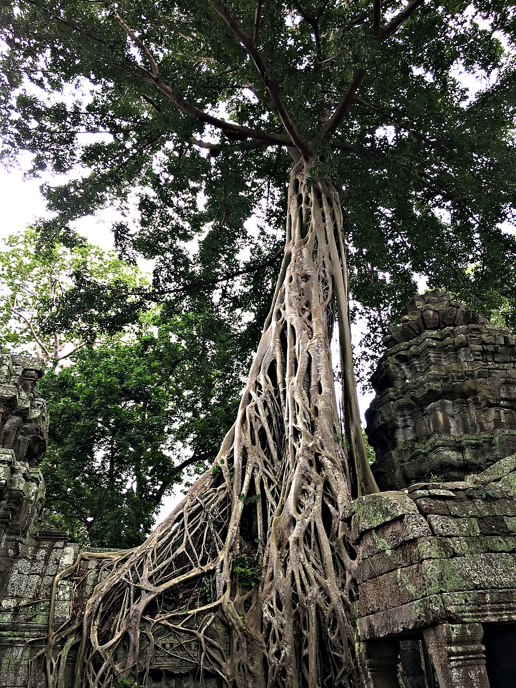
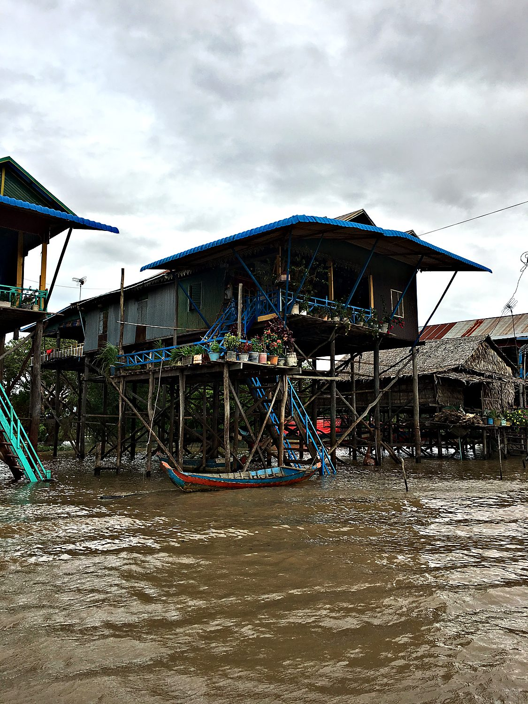

I explored Siem Reap with my parents in August 2018, drawn, like almost everyone, by the temples of Angkor. Before the temples, though, came the water. We took a boat out to Kampong Phluk, a village built entirely on stilts above a lake, and I slipped off into the flooded mangroves in a tiny rowboat that felt like paddling through a drowned forest. The temples themselves lived up to every expectation, from the vast symmetry of Angkor Wat to the serene stone faces of the Bayon. My own athletic contribution was a wobbly bike ride around town that ended, as these things do, with me being chased by a stray dog.
Siem Reap is the laid-back town that has grown up as the gateway to Angkor, and it makes a comfortable base for exploring one of the wonders of the world. The temples nearby are not merely picturesque ruins. They are the surviving heart of the Khmer Empire, which from the 9th to the 15th century was one of the mightiest civilizations in Southeast Asia. At its peak the empire ruled much of the mainland from its capital here, and the city of Angkor may have been the largest in the world before the modern era. Cambodia today still measures itself against that golden age.

The greatest of the Khmer god-kings poured their wealth into staggering feats of architecture. Angkor Wat was a Hindu temple dedicated to Vishnu built in the early 12th century by Suryavarman II, and it remains the largest religious monument ever constructed. Later that century Jayavarman VII converted the empire to Buddhism and raised the Bayon, its towers carved with enigmatic smiling faces. Eventually the empire declined, the capital shifted south toward Phnom Penh, and the jungle began to reclaim the abandoned temples, swallowing some of them whole.

Cambodia's modern history carries a much darker chapter. After winning independence from France in 1953, the country was engulfed in the region's wars, and in 1975 the Khmer Rouge seized power. In under four years their regime murdered or starved to death somewhere around two million people, roughly a quarter of the entire population, in one of the worst genocides of the 20th century. A Vietnamese invasion ended the nightmare in 1979, and Cambodia has been slowly rebuilding ever since. Through all of it, Angkor Wat has remained the nation's proudest emblem, and it is the only building in the world to appear on a national flag.
This magnificent temple was completed in 961 AD during the reign of King Rajendravarman II. It is made of laterite and brick, giving it a reddish tint that makes it stand out from most of the other Angkor temples which are mostly grey. The temple was likely used for funerals, though we cannot know for certain. It honors the god Shiva, though some of its towers used to have statues of the goddess Parvati (Shiva’s wife), the god Vishnu, and his wife the goddess Lakshmi. Cambodia is a Buddhist country today, so I was shocked to discover just how much Hindu heritage it had, as today the religion is mostly confined to the Indian subcontinent. It made me speculate how different the world’s geopolitical landscape must have been a thousand years ago.

If the Bayon is the most serene of the temples, Ta Prohm is the most romantic. Left largely as explorers found it, the temple is being slowly devoured by the jungle, with the enormous roots of silk-cotton and strangler fig trees pouring over its walls and prying apart its stones. The effect is unforgettable, a wrestling match between stone and forest frozen in slow motion. Western audiences may recognize it as a backdrop from the Tomb Raider film, though no camera quite prepares you for the scale of those roots in person. It is a fitting reminder that given time, nature can overwhelm even the mightiest made-made creations.

Away from the temples, Kampong Phluk offered a glimpse of an entirely different Cambodia, one shaped by water rather than stone. The village sits on the Tonlé Sap, a lake that swells dramatically each monsoon season, so its houses are built on stilts several metres high to ride out the annual flood. We took a small rowboat into the surrounding mangroves, where the trees stand half-submerged and the water is startlingly quiet, broken only by the occasional monkey or frog. For these villagers, life is lived in rhythm with the rising and falling of the lake.
